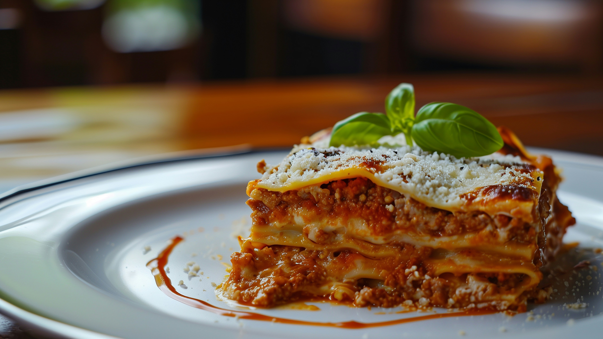

Home
Lasagna

Photo by
Emanuel Ekström
on
Unsplash
Description
This is one of my favoite dishes. My mom used to make this for me every
year for my birthday. There is nothing like a high quality home made
lasagna.
This dish is the ultimate comfort food. The combination of various
cheeses, meats and pasta is a tough one to beat. There are also many
variations to the dish that can be made to create a unique experience.
Ingredients
- Beef & Sausage
- Ricotto Cheese
- Mozzarella
- Parmesan
- Onion
- Garlic
- Egg
- Lasagna Pasta
- Tomato Paste
- Paste Sauce
- Parsley
- Spices
- Spinach (variation)
Steps
- Boil pasta in a large pot with salt water.
-
Cook the beef and sausage with the onion and garlic. After draining, add
pasta sauce and set to simmer.
- Combine the cheese mixture into a bowl.
-
Finally, layer the meat sauce and cheese mixture with the noodles. Bake
until the top layer is golden brown.
- Don't forget to let the lasagna rest for at least 15 minutes.